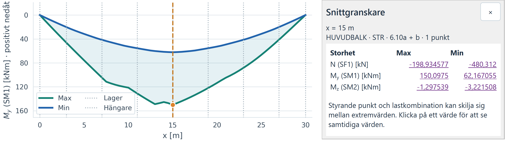

Lastkomb – användarmanual
Från Abaqus laststeg till styrande lastkombination, samtidiga snittkrafter och färdiga rapporttabeller.
Kom igång
I Windows packar du upp hela ZIP-filen och öppnar Lastkomb.exe i mappen Lastkomb. Behåll mapparna app och runtime bredvid programfilen. På Mac öppnar du DMG-filen och drar Lastkomb till Program. Appen och manualen fungerar offline. Öppna manualen igen med Mer → Användarmanual eller F1.
Programmet startar med en syntetisk bro. Välj en del i projektträdet till vänster. Mittpanelen visar diagram och punktvärden för den del, storhet och beräkningsmetod du väljer. Granskaren till höger visar vilka laster som gav ett valt värde. Vid en längre beräkning visas Beräknar… ovanför flikarna.
Räkna med exemplet vid 15 m
- Välj Mer → Öppna räkneexempel. Markera HUVUDBALK i trädet. Välj Diagram, storheten My (SM1) och läget STR · 6.10a + b.
- Skriv 15 i både Från och Till och tryck Retur. Nu visas mittsnittet. Klicka i radens Max-cell för att se de styrande bidragen.
- Byt till Min-cellen på samma rad. Jämför de aktiva laststegen i granskaren. Välj Hela för att se hela balken igen.
Så får du 150,0975 kNm i maxkolumnen. Det permanenta momentet är 52 + 13 = 65 kNm. I 6.10b blir faktorn 0,89 × 1,35 = 1,2015. Servicefordonet i läge V4 ger 48 kNm från den vertikala lasten och 0 kNm från den horisontella i just detta snitt.
My,max = 1,2015 × 65 + 1,50 × 48 = 150,0975 kNm.
Samma lastplacering ger normalkraften −480,312 kN. För minsta moment styr i stället gångfälten 01, 09 och 10. Då är My,min cirka 62,1671 kNm.
För jämförelse ger 6.10a ensam cirka 106,4203 respektive 63,8668 kNm i detta snitt. Programmet redovisar yttervärdena över båda ekvationerna. Siffrorna här gäller räkneexemplets ursprungliga lastregler.

Importera egna resultat
Exportera varje laststeg som ett oberoende, linjärt lastbidrag i samma lokala axelsystem. Om Abaqus-stegen innehåller successivt pålagda laster behöver du ta fram tillskottet från varje steg före importen.
- Välj Importera CSV… för enskilda filer, + Mapp för en hel mapp med undermappar eller dra filerna till fönstret. Första egna importen ersätter räkneexemplet. Nästa import kompletterar projektet. En ändrad fil på samma sökväg ersätter sin tidigare version.
- Öppna Importkontroll. Gå igenom avvikelser för saknade steg, ofullständiga punkter och motstridiga dubbletter. Punkter som saknar ett aktivt steg eller en samtidig storhet utesluts. Om ett helt laststeg saknas kan ett resultat ändå visas för det reducerade underlaget.
- Bekräfta grupp, fält eller fordonsläge samt riktning under Lastregler → Steg. Kryssrutorna i projektträdet styr vilka filer och steg som används. Klicka sedan på rätt del under Resultatdelar.
Filer, rubriker och enheter
Avgränsa kolumnerna med semikolon. Använd decimalpunkt eller decimalkomma och kodningen UTF-8 (med eller utan BOM) eller Windows-1252. Programmet läser kolumnrubrikerna. Följande filnamn fungerar som mallar.
| Fil och användning | Kolumner |
|---|---|
HUVUDBALK_SM1.csvBalk, en fil per storhet | Element, nod, x och vid behov y och z. Därefter en kolumn per laststeg. För hängare kan Hängare x [m] särskilja hängarna. |
PLAT_Y0_LANGS.csvPlåt, en rad per steg och punkt | Steg, sida (SPOS/SNEG), läge längs snittet, koordinater och komponenterna S11, S22 och S12 i MPa. |
IL_huvudbalk.csvInfluenslinje för ett snitt | Steg, Lastens x [m] och ordinater som SF1 [kN/kN] eller SM1 [kNm/kN]. |
BROBANA_U3.csvLAGER_RF3.csv | Nod, x och ett värde per laststeg för förskjutning respektive stödreaktion. |
En balkfil kan exempelvis börja så här. Samma punktidentitet i delens SF1-, SM1- och SM2-filer gör att programmet kan koppla ihop storheterna även när radordningen varierar.
Element;Nod;x [m];y [m];z [m];G_SELF;G_SURF;Q_VEH_V4
130;230;15,0;0;0;52;13;48Standard är meter för koordinater och förskjutningar, kN för krafter, kNm för moment och MPa för spänningar. Ange andra enheter i rubriken, exempelvis G_SELF [mm] i en U3-fil.
Spara och öppna projekt
Välj Spara för att skapa en flyttbar .lastkomb-fil med original-CSV, kontrollsummor, regler, urval och fästa kurvor. Öppna… räknar om resultat från projektets inbäddade data. När originalfilerna har ändrats använder du Läs uppdaterade källfiler i granskaren. Mer → Spara som… skapar en separat projektkopia.
Välj beräkningsläge
Använd listan uppe till höger ovanför flikarna. Varje max och min gäller separat för vald resultatpunkt och storhet. För en influenslinje visar diagrammet den importerade ordinaten vid varje lastläge.
| Läge | Vad resultatet visar |
|---|---|
| STR · 6.10a + b | Dimensionerande omhölje av permanenta laster och trafik. Programmet provar båda ekvationerna enligt kursuppgift AF2203, avsnitt 3.5, och behåller det styrande fallet för varje extremvärde. |
| Karakteristisk trafik | Omhölje av aktiva gång- och fordonslaster med karakteristiska värden och valda placeringsregler. Permanenta laster utelämnas. |
| Utmattning · fordon | Omhölje av de importerade fordonsstegen med karakteristiska värden. För cykelräkning och skada under en rörlig passage använder du fliken Fordonsöverfart. |
Ställ in lastregler
Vilka steg hör ihop?
Under Lastregler → Steg hör till exempel Q_PED_02 och H_PED_02 till samma gångfält, med vertikal respektive horisontell last. Motsvarande par för ett fordonsläge är exempelvis Q_VEH_V4 och H_VEH_V4. Kontrollera egna stegnamn och koppla dem manuellt vid behov. Horisontalstegen ska redan innehålla den avsedda horisontallasten.
Permanent last och partialkoefficienter
Förvalet samlar permanenta steg som G_SELF och G_SURF i samma grupp. För ett moment summeras först gruppens bidrag i punkten. En positiv summa är ogynnsam när största moment söks och en negativ summa är ogynnsam när minsta moment söks.
Med förvalen är ogynnsam G-faktor 1,35 i 6.10a och 0,89 × 1,35 i 6.10b. Gynnsam G-faktor är 1,00. För trafik är ogynnsam γ = 1,50 och gynnsam γ = 0. Kombinationsfaktorn ψ₀ är 0,4 för gångtrafik och 0 för servicefordon. γd är förvald till 1,00. I 6.10b får huvudlasten fullt trafikvärde och medföljande last får ψ₀.
För egna permanenta faktorer markerar du laststeget i Steg och väljer Egen G-grupp för markerat steg. Vill du att flera laster ska prövas tillsammans, skapa en grupp under G-grupper och tilldela stegen den gruppen. Varje grupp bedöms för sig. Avsluta med Tillämpa.
Lastplacering och axlar
Under Regler provas i förvalet ogynnsamma gångfält med en gemensam horisontalriktning, ett fordonsläge i taget och även fallet utan trafik. Gångtrafik och fordon utesluter varandra. P1 omfattar fälten 02–09 och P2 fälten 02–05. Stäm av numreringen med din export innan du väljer ett fast mönster. Tillåter du samtidig trafik prövas olika huvudlaster i 6.10b.
Under Modell bekräftar du kopplingen mellan SM1/SM2 och My/Mz för vald del mot Abaqus lokala axlar. Du kan också ange lägen för lager, hängare och tung fordonsaxel som diagrammarkeringar. Klicka på Tillämpa när du har ändrat inställningarna.
Läs av diagram och snitt
För en balk är den vågräta axeln x längs delen. För plåt är den läget längs snittet. För en influenslinje anger den enhetslastens läge. Böjmoment ritas med positiv riktning nedåt, även för momentens influenslinjer. Ett värde på +150 kNm ligger alltså längre ned än +62 kNm. Tabellen, granskaren och exporten använder modellens algebraiska tecken.
Hitta extremvärden i ett snitt
Klicka i diagrammet eller dra den lodräta snittlinjen till ett läge. Rutan Snittgranskare till höger visar närmaste tillgängliga resultatläge i meter. När du granskar omhöljet visas varje storhets största och minsta värde bland snittets giltiga punkter för vald del, sida, intervall, beräkningsläge och aktiva steg. Värdena kommer från importerade punkter. På influenslinjer läser du ordinaterna vid det valda lastläget.
Klicka på ett max- eller minvärde i snittgranskaren för att välja dess storhet, punkt och lastkombination. Detaljerna visas längre ned i granskaren. Under en längre snittberäkning visas Beräknar snittet…. Stäng rutan med ×.
Vill du i stället veta vilka krafter som uppträder samtidigt, klicka nära en punkt på önskad kurva eller på Max eller Min i punkttabellen. Granskare visar den styrande ekvationen och lastplaceringen, faktor × laststegsvärde och samtidiga värden från samma lastkombination i samma punkt. Använd element och nod för att skilja punkter åt när flera ligger vid samma x.
Begränsa diagram och tabell med Från och Till följt av Retur, eller håll ned Skift och dra vågrätt. Hela återställer hela intervallet.
Jämför kurvor och plåtsidor
Öppna Kurvor för att visa enskilda ofaktorerade steg. Välj ett extremvärde och klicka på Visa kombination som kurva för att följa just den lastplaceringen längs delen. Omhöljets olika punkter kan däremot styras av olika placeringar. Fästa kombinationer rensas när lastreglerna ändras.
Välj kurvans namn i granskaren eller klicka på kurvan. Snittrutan visar nu Lastfall eller Fast kombination och namnet. För en punkt visas Värde per storhet. Om flera punkter delar läget visas deras Max och Min med samma lastfaktorer genomgående, även för von Mises. Klicka på en siffra för att se exakt punkt och storhet för den valda kurvan. Välj Styrande maximum eller Styrande minimum för att återgå till omhöljet.
För plåt väljer du SPOS eller SNEG enligt skalets lokala normal. Mises kombinerar först S11, S22 och S12 för en och samma lastplacering och beräknar därefter von Mises-spänningen. Tryck anger om minsta huvudspänningen är negativ i någon tillåten kombination. Okänt anger saknade komponenter. Bucklingsbärförmågan behöver bedömas separat.
Exportera tabell och figur
Välj del, sida, läge och intervall i Diagram. Kontrollera avvikelserna. Exportera tabell… ger en Excel-arbetsbok (.xlsx) eller separata semikolonseparerade CSV-filer i samma mapp.
- Diagramvärden visar den valda storhetens max/min per punkt. Redovisning 5.3 sammanfattar varje storhets globala max/min inom urvalet.
- Alla punktextremer ger varje storhets max/min i alla giltiga punkter med samtidiga värden, lastkombination och stegfaktorer. Beräkningsvillkor anger bland annat steg, regler och avvikelser.
- Valda kurvor tillkommer när du visar jämförelsekurvor. En influenslinje exporteras i stället som en tabell med ordinater.
Spara figur… exporterar diagrammet med valt intervall och kurvor till PNG, SVG eller PDF. Avläsningslinjen för snitt döljs i den sparade figuren. Använd SVG eller PDF om figuren ska skalas i en rapport.
Kontrollera modellen
Välj en del i trädet, öppna Kontroller, välj metod och fyll i uppgifterna. Klicka på Kör kontroll. Kontrollerna använder hela den valda delen, även när diagrammet visar ett kortare intervall.
| Kontroll | Gör så här |
|---|---|
| Egenlast med faktor 1 | Välj ett permanent steg. Programmet kontrollerar att det isolerade steget med faktor 1 återger alla importerade punktvärden för delens storheter. |
| Spegelsymmetri | Välj storhet och ett verkligt speglat stegpar. Ange samma eller motsatt tecken, spegelplan samt koordinat- och värdetolerans. Resultatet anger största avvikelsen och spegelparets lägen. V2 och V4 har båda tung axel vid x = 15 m i kursens placering och skiljer sig i sidled. |
| Reaktionsjämvikt | Importera den relevanta RF-komponenten för alla stödnoder. Välj steg, ange yttre last med tecken i samma riktning och bekräfta att alla stöd ingår. Residualen är summan av stödreaktionerna plus den yttre lasten i kN. |
| Nedböjning L/400 | Välj vertikal U-komponent, bekräfta riktningen och ange teoretisk spännvidd i meter. Största absoluta förskjutningen från aktiva karakteristiska trafiksteg jämförs med L/400. Vid L = 30 m är gränsen 75 mm. |
Beräkna en fordonsöverfart
För att få ett spänningsförlopp i en bestämd fiber behöver du influenslinjen för just det snittet och körspåret. Lastens x-position ändras under passagen medan det analyserade snittet ligger kvar.
- Välj influenslinjen i projektträdet. Öppna Fordonsöverfart och bekräfta att linjen avser en nedåtriktad enhetslast på 1 kN fördelad över båda hjulspåren. Linjen måste omfatta hela bron med noll i ändpunkterna.
- Ange axellaster och axelavstånd. Förvalet placerar 80 kN vid x och 40 kN vid x − 3 m. Programmet interpolerar linjärt mellan lastlägen och använder noll utanför linjens ändpunkter.
- Ange area i mm² och, för böjning, signerade koefficienter k₁ och k₂ i MPa/kNm för vald fiber och respektive momentkomponent. En fiber på avstånd r i mm från neutralaxeln har koefficienten ±10⁶r/I när I mäts i mm⁴. Om endast axiell spänning ska ingå, välj Beräkna endast axiell normalspänning N/A.
- Ange detaljkategori ΔσC för den aktuella detaljen samt γMf. Välj Beräkna spektrum och skadeandel.
Resultatet ger minsta och största fiberspänning, spänningsvidder, cykler per passage, skadeandel per passage och antal hela passager till D = 1 när skadan är positiv. Cyklerna räknas med rainflow för en upprepad vertikal passage i positiv x-riktning och skadan summeras enligt Palmgren–Miner. Bromsning kräver ett eget lastförlopp.